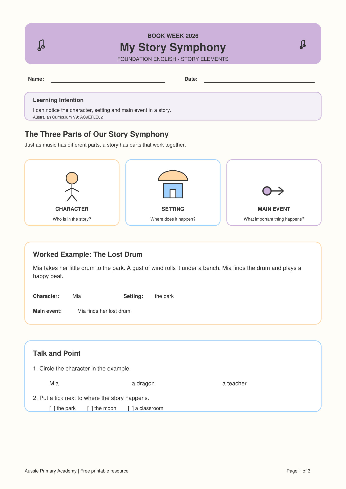

Foundation · English · Literature · Book Week 2026 · Free Printable
Foundation Story Elements Worksheet
Help Foundation students notice who is in a story, where it happens and the important event through simple reading, listening, pointing, drawing and discussion.
Worksheet Preview

Preview of the first page · Full 3-page PDF includes student activities, answer key and teaching support
About This Foundation Story Elements Worksheet
This Foundation English resource introduces three important parts of a story: character, setting and main event.
Students work with short, accessible stories and respond by circling, ticking, drawing, labelling or speaking. This makes the activity flexible for students who are still developing confidence with independent reading and writing.
The worksheet is part of the My Story Symphony – Book Week 2026 collection from Aussie Primary Academy.
Learning Intention
“I can notice the character, setting and main event in a story.”
Australian Curriculum V9
AC9EFLE02
Supports students to respond to stories and share thoughts and feelings about their events and characters.
Aussie Primary Academy is an independent publisher and is not endorsed by ACARA.
Skills Practised
- Identifying a character
- Finding the setting
- Recognising a main event
- Listening and oral retelling
- Using details from a story
- Responding through drawing or simple writing
Teacher / Parent Tip
Read each short story aloud and pause to model the questions Who?, Where? and What happened?
Accept oral answers, pointing, circling and labelled drawings. Correct spelling does not need to be the main focus of this activity.
What's Included
- Clear Foundation-friendly learning intention
- Character, setting and main event explanation
- Worked example: The Lost Drum
- Short reading activity: The Bird's Morning Song
- Drawing, ticking and multiple-choice responses
- Student “I Can” checklist
- Parent tip
- Answer key
- Teacher support notes
Differentiation
Support: Read the text aloud, use picture cues and allow students to answer orally before drawing or writing.
Core: Students identify the character, setting and main event using the response options provided.
Extend: Ask students to orally retell the story using three prompts: “Who?”, “Where?” and “What happened?”
Why This Helps Early Readers
Learning to notice character, setting and important events helps young readers organise what they understand about a story. These simple questions build a foundation for later reading comprehension, sequencing and evidence-based responses.
How to Use This Worksheet
- Whole class: Read the short text aloud and model each story element together.
- Small groups: Use the worksheet during guided reading or literacy rotations.
- Independent practice: Students complete the supported response tasks after listening to or reading the text.
- Home learning: Parents can read the story aloud and use the parent prompts provided on the worksheet.
Frequently Asked Questions
Can Foundation students complete this independently?
Some students may complete parts independently, but reading the stories aloud and discussing the questions first will support most Foundation learners.
Is an answer key included?
Yes. Page 3 includes the answers, suggested responses and teaching support.
Is this worksheet only for Book Week?
No. It works well as a Book Week activity, but the story elements skill can be used at any time during Foundation English learning.
Is the worksheet free?
Yes. It is free to download and print for learning use.
Free Book Week Bonus
Continue with My Book Week Reading Adventure
Looking for a flexible Foundation–Year 6 Book Week resource too? Explore the free 8-page reading booklet with activities for story elements, characters, settings, vocabulary, creative response and book recommendations.
View the Free F–6 WorkbookExplore the Book Week Story Elements Collection
Continue through the year levels or choose the worksheet that best matches your students.